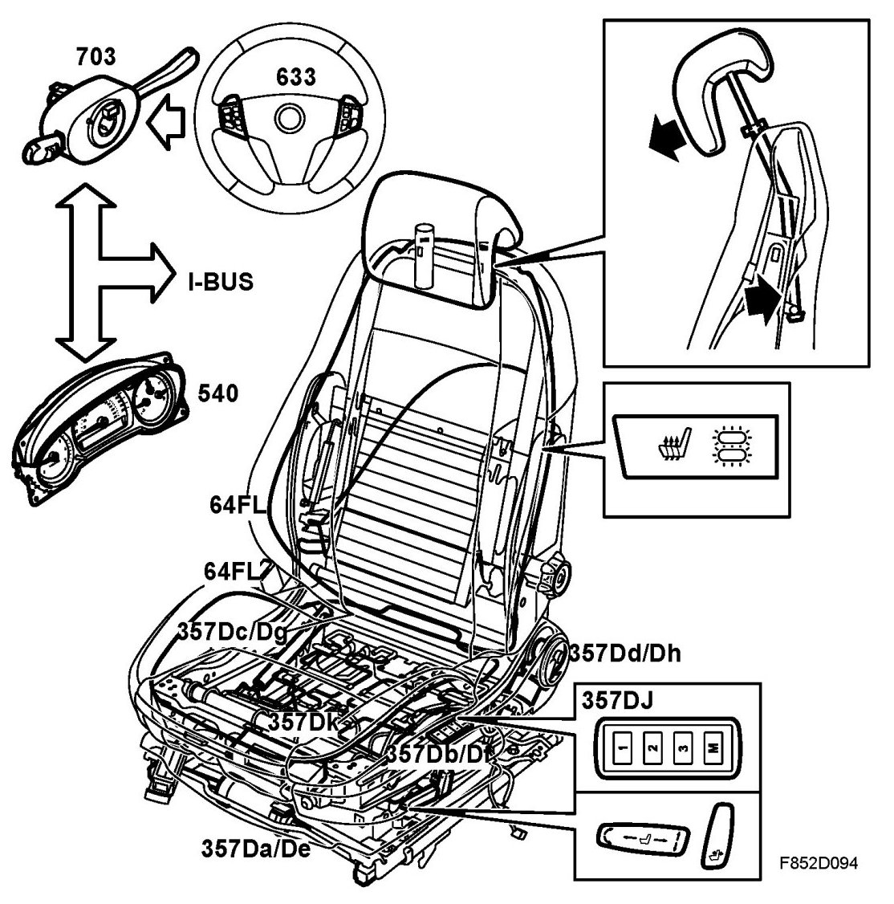
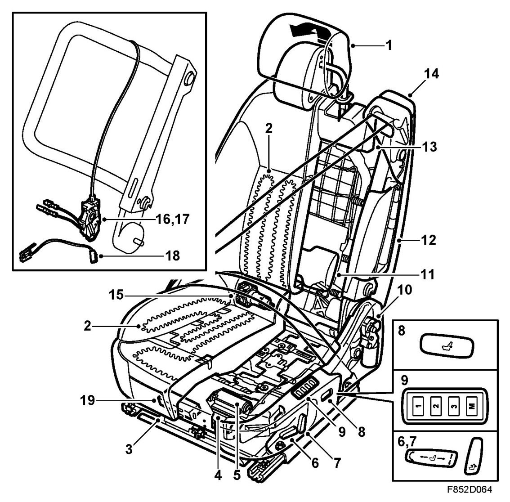

Brief Description
Brief Description
Overview, 4D, 5D

- Left seat heating pad (64FL)
- Motor, length adjustment, electrically operated driver's seat with memory (357Da), or Motor, length adjustment, electrically operated seat (357a)
- Motor, tilt adjustment, electrically operated driver's seat with memory (357Db) or Motor, legroom adjustment, electrically adjustable seat (357b)
- Motor, height adjustment, electrically operated driver's seat with memory (357Dc) or Motor, legroom adjustment, electrically operated seat (357c).
- Motor, backrest adjustment, electrically operated driver's seat with memory (357Dd) or Motor, legroom adjustment, electrically operated seat (357d)
- Electrically adjustable driver's seat with memory, legroom adjustment position sensor, (357De)
- Position sensor, tilt adjustment, electrically operated driver's seat with memory (357Df)
- Position sensor, height adjustment, electrically operated driver's seat with memory (357Dg)
- Rear height adjustment position sensor, electrically adjustable driver's seat with memory (357Dh)
- Electrically adjustable driver's seat with memory switch (357Dj)
- Electrically adjustable driver's seat with memory control module (357Dk)
Overview, CV

1. SAHR (Saab Active Head Restraint)
2. Thermostatically controlled heating pad (254/64)
3. Length adjustment motor with integral position sensor (357Da/De)
4. Tilt adjustment motor with integral position sensor (357Db/Df)
5. Height adjustment motor with integral position sensor (357Dc/Dg)
6. Switch for height, length and tilt adjustment (357D)
7. Switch for backrest rake (357D)
8. Switch for lumber support adjustment (357o)
9. Switch for memory function (357Dj)
10. Motor with integral position sensor for adjustment of backrest rake (357Dd/Dh)
11. Pneumatic lumbar support
12. Side airbag (333Db)
13. Integral seat belt (belt tensioner (236D))
14. Handle for access
15. Air pump for lumbar support (357m)
16. Microswitch for backrest, locked in upright position (741)
17. Microswitch for backrest, easy entry handle activated (369r)
18. Microswitch for backrest, folded down position (369f)
19. Motor, length adjustment, electrically operated seat (357a)
Description
The front seats are constructed around pressed steel frames for the seat and the backrest. The backrest and seat frames are joined together via the backrest reclining mechanism.
On the front edge of the seat frame there is a transverse plate that prevents the passenger from sliding forwards and downwards in the event of a collision.
The cushions are made of polyurethane polyethylene and covered with leather/vinyl or knitted plush and rest on a spring system.
In the front seat the SAHR system (Saab Active Head Restraint) is integrated in the backrest. SAHR is a mechanical system that is activated by the body weight, the placement of the body and collision force. It consists of an integrated structure in the backrest which is connected to the head restraint. SAHR acts to reduce neck injuries and whiplash injuries in the event of low speed collisions from behind.
The driver's front seat features legroom and height adjustment while only the length can be adjusted on the passenger seat. 4D, 5D: The driver's seat has lumbar support as an option.
The front seats have electric operation as an option. The driver's seat can also be fitted with a memory function in addition to the electric operation. The system gives the driver's seat a memory function which allows the storage of 3 different seat settings. Cars equipped with a seat memory function also have rearview mirrors with memory, which means that the seat settings are memorized together with the rear-view mirror setting. CV:Electrically operated driver's seat/seats also have a pneumatic lumbar support which is controlled via a switch placed on the seat cover on the outside of the seat.
In some markets, front seats come with electric heating as standard. The use of automatic seat heating is possible. The seat heating buttons are integrated in the ACC unit. It is possible to choose between automatic and manual control. See Settings, ACC system
4D, 5D: The rear seat is designed to provide three seats. The outside places have head restraints as standard and the centre seat can be fitted with a head restraint as an option. On some markets the centre head restraint is standard. The rear seat backrests are foldable. It is important that the rear seat backrests are locked in the event of a collision. A switch is integrated in the backrest lock on the right and left sides; a message is displayed on SID if the rear seat backrest is unlocked. The backrest cushions have a 40/60 per cent division. Each backrest consists of a support plate, polyurethane foam cushion and an upholstery bag. In addition the 60 per cent part of the backrest is fitted with armrests with a storage compartment. Behind the armrest is a loading hatch integrated in the support plate. The seat cushion cannot be folded.
CV: The rear seat is designed to give two seats with head restraint.